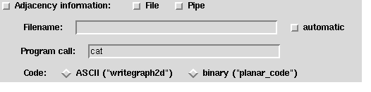

Up : Main
Prev : Generation programs
Next : Tubetype
CaGe V0.3
Fullgen
Fullgen is a generation program which generates fullerenes. Fullerenes
are spherically shaped molecules built of carbon atoms where every carbon
atom has bonds to exactly three other carbon atoms so that each carbon ring
consists of either five atoms (pentagon) or six atoms (hexagon). Unlike other
fullerene generators, fullgen generates complete lists and it is
currently the fastest fullerene generator. The generation of all fullerenes
with 60 atoms takes less than one minute.
The number of vertices (atoms) can be selected by two sliders named
"Minimal number
of vertices" and "Maximal number of vertices". If the
"Min=Max"--checkbutton is not switched on, then these two sliders can have
different values.
The following description of the output options holds for all graph
generation programs:
3D representation:
Exactly if this checkbutton is switched on, then
three--dimensional embeddings will be generated (using spring).
Where these embeddings are sent to depends on which of the radiobuttons
named "RasMol", "GeomView" or "File" is switched on. If you switch on
the checkbutton, "RasMol" will be taken per default. But you can as well
choose the output direction by directly selecting a radiobutton. The
checkbutton will then be switched on automatically. The only possibility
to prevent 3D embeddings is to switch off the checkbutton.
RasMol:
The 3D representation will be sent to RasMol (if provided on your
computer).
GeomView:
The 3D representation will be sent to GeomView:
(if provided on your
computer).
File: The 3D representation will be sent to a file.
The file will
contain data in writegraph3d code (see section
Codes
for description). The name of the
file can be entered in the "Filename"--entry below. However, if the
"automatic"--checkbutton is switched on, then the filename will be
determined automatically. It is a good choice to let CaGe determine the
filename, for two reasons: The first is that CaGe considers all options
used while building the filename. So by having a look at the name of a file
you know how its contents were
generated. The second reason is that CaGe
chooses the same filename that fullgen would if you generated the
fullerenes without using CaGe (the only difference is that CaGe adds
the suffix ".3d"). So the filenames are consistent. Now,
because it is such a good idea to let CaGe determine the filename,
CaGe automatically invokes the "automatic"--checkbutton if you switch
on the "File"--radiobutton. If you want to choose the filename by yourself,
then you should just enter the filename entry. In this case CaGe assumes
that you want to store 3D embeddings in a file, so it switches on the
"File"--radiobutton automatically. Furthermore, the
"automatic"--checkbutton is switched off.
2D representation:
Exactly if this checkbutton is switched on, then
two--dimensional embeddings will be generated (using schlegel).
Where these embeddings are sent to depends on whether the "Display" or the
"File"--radiobutton is switched on. The behaviour of the checkbutton and the
radiobuttons is the same as for 3D representation. The same holds for the
filename (here the suffix ".2d" instead of ".3d" is added).
It is possible to generate 2D and 3D embeddings simultaneously. However, it is
not possible to direct one of these representations into a file and the other
one onto the display. So if these two directions collide, then CaGe will
switch off one representation checkbutton. If the 2D embeddings are sent to
a file, then this file will contain data in writegraph2d code.
Adjacency information:

Exactly if this checkbutton it switched on, then
pure adjacency information will be generated. Where this information is sent
to depends on whether the "File" or the "Pipe"--checkbutton is
switched on (both can be switched on simultaneously). If the information is
sent to a file, then for the name of the
file the same holds as for the 3D representation (no suffix will be added).
If the information is sent to a pipe, then the "Program call"--entry must
contain a program call, i.e. a program name and --- if needed --- some
options. An example of a program call is "cat". This program takes the
adjacency information as input and writes it to the standard output channel.
There are two different codes in which the adjacency information can be
represented: writegraph2d and planar_code.
See section
Codes
for a description.
Which code is chosen depends on which of the
related radiobuttons is switched on. Default is writegraph2d
since it is an ASCII code.
Widget interactions: You have seen that there are several widget
interactions. There are various reasons for them:
Inferences: If you select a widget which provides a special option,
then CaGe automatically sets all general options on which the special
option depends. For example, if you enter the "Filename" entry for
3D representation, then CaGe assumes that you want to generate
3D embeddings and send them to a file. So it automatically switches on the
"File"--radiobutton and the "3D representation"--checkbutton.
Group dependencies: This is the opposite to inferences. If a general
option is not invoked, then all related special options must not be invoked.
For example, if you switch off the "3D representation"--checkbutton, then
no 3D embeddings will be generated. So all radiobuttons and the
"automatic"--checkbutton are switched off (the "Filename"--entry could be
cleared as well, but this is not done).
Conflicts: Most of the widgets are not independent of each other. Not
all combinations of options are allowed. So if a combination is not allowed,
then the related widgets are changed. An easy example is that you cannot
choose a filename by yourself and by CaGe simultaneously. So if you invoke
a "Filename"--entry, the related "automatic"--checkbutton must be switched
off. Another example is described above (see item "2D representation").
Sometimes conflicts are prevented automatically by providing an appropriate
widget type. For
example, since it is not possible to direct 3D representations to
RasMol and to GeomView and to a file simultaneously,
radiobuttons instead of checkbuttons are provided to direct the 3D output.
Defaults: This is a special case of group dependencies where the
special options to be chosen are not unique. In this case CaGe chooses
default options. For example, if you switch on the
"3D representation"--checkbutton, then by default the output will be directed
to RasMol. Another example: If you switch on a "File"--radiobutton,
then by default the related "automatic"--button will be switched on.
These interactions basically concern the output options. However, conflicts
may also occur using extra options or basic options, so there the related
technique is used as well.
Extra options:
The following options are options which are rarely
used. Some of them are so specific that you must know about the details of the
generation program fullgen. Such options are not explained in detail.
Instead the related option which you would have to use for a direct call of
fullgen is provided. It is enclosed in brackets "{" and "}".
For a further description of such an option see the original manual of
fullgen.
IPR: If you switch on the "IPR"--checkbutton, only fullerenes with
isolated pentagons are generated. An isolated pentagon is a pentagon which is
surrounded only by hexagons.
Dual output: If this checkbutton is switched on, then every generated
fullerene is dualized before it is read by CaGe, i.e. every vertex becomes
a face and every face becomes a vertex. The result of such a dualization is a
triangulation.
Spiral statistics: {spistat}If you switch on this checkbutton,
then a statistics about the number of spirals in the generated fullerenes will
be written to the logfile. In this case the minimum and the maximum number of
vertices must be the same.
Symmetry statistics: {symstat} If you switch on this checkbutton,
then a statistics about the symmetries in the generated fullerenes will be
written to the logfile. There are 28 different symmetry groups which can occur
in a fullerene, named e.g. S i, Ci,
Cih ...
Symmetry filter:
If you click this button, another window appears
where you can filter fullerenes which have a certain symmetry. There are 28
different symmetry groups. For every generated fullerene its symmetry group
is determined. If the related checkbutton is switched on (i.e. the symmetry is
valid), the fullerene will
be sent to CaGe by fullgen, otherwise it will be dropped. By
default, all symmetries are valid. If you change the default, the
"Symmetry filter"--button will be highlighted. Note that the restriction to
some symmetries will not speed up the generation process. Only a simple filter
is invoked. Except the checkbuttons,
there are three more buttons inside the
"Symmetry filter for fullerenes"--window: By clicking "Clear all" you
switch off all checkbuttons (after that, you should switch on at least one
checkbutton), by clicking "Set all" you switch on all
checkbuttons, by clicking "Done" you close the window. If you close the
window, its contents remains valid. Closing the window is just good for
decreasing the confusion arising by too many windows on the display.
Select cases:
{case}The generation of fullerenes can be split into
three disjoint parts (cases). By default, all cases are considered. If you
restrict the generation to one case, the "Select cases"--button will be
highlighted. By clicking "Done" you close the window. The selected case
remains valid.